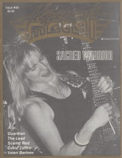

Sacred Warrior
|  |
| July 1989 Heaven's Metal |
 |
| August 2013 Heaven's Metal |
Media coverage:
- 1988 in Heaven's Metal "Sacred Warrior", by Bob Hopkins
- Jun 1988 in Heaven's Metal "The Secret of Their Success", by Steve Schmutzer
- Jun 1988 in Heaven's Metal "Poster: Sacred Warrior"
- Apr 1989 in CCM "Notebook: A White Metal Answer To Rebellion", by Brian Quincy Newcomb
- Spr 1989 in Harvest Rock Syndicate "Metal Shop: Nomads No More", by Mark Eischer
- Jul 1989 in Heaven's Metal "Inside The Warrior's Heart", by Doug Van Pelt
- Jul 1989 in Heaven's Metal "Concert Review: Sacred Warrior, Resurrection Band", by Dave Adams, Jr
- 1989 in Cornerstone "Interview: Sacred Warrior"
- Jun 1990 in Heaven's Metal "Sacred Road Warriors Speak Out", by Doug Van Pelt
- Jun 1990 in Heaven's Metal "Concert Review: Sacred Warrior, Paradox", by Doug Van Pelt
- Dec 1990 in Heaven's Metal "Poster: Sacred Warrior (Bruce Swift)"
- Jan 1991 in CCM "In The News: Living In A Wicked Generation", by Kathleen A Ervin
- Jan 1991 in Harvest Rock Syndicate "Spotlight: During The Night the Darkness Is Scattered", by Jori Butler
- Jan 1992 in Heaven's Metal "Obsessed With God", by Doug Van Pelt
- Nov 1996 in HM "Still Following the Master's Command", by Chris Callaway
- Apr 2010 in Heaven's Metal "Concert Review: Hard Rock Cafe - San Juan, Puerto Rico", by Edwin López
- Oct 2012 in Heaven's Metal "Alive and Kickin': An interview with vocalist Eli Prinsen", by Dale Huffman
- Aug 2013 in Heaven's Metal "Their Legend Continues", by Chris Beck
Albums & reviews:
1988: Rebellion
- Jun 1988 in Heaven's Metal, by Doug Van Pelt
- Win 1988 in Harvest Rock Syndicate, by Ernest P. Strange
- Feb 1989 in CCM, by Doug Van Pelt
- Mar 1989 in Campus Life, by Jim Long
- Sum 1989 in YouthWorker, by Mike Atkinson
- Oct 1989 in CCM, by Doug Van Pelt
- Oct 1989 in Heaven's Metal, by Doug Van Pelt
- 1989 in Cornerstone, by Jon Trott
- Win 1989 in Harvest Rock Syndicate, by Kevin Allison
- Feb 1990 in Campus Life, by Jim Long
- Spr 1990 in YouthWorker, by Mike Atkinson
- Nov 1990 in CCM, by Doug Van Pelt
- Dec 1990 in Campus Life
- Dec 1990 in Heaven's Metal, by Joey Knight
- 1991 in Cornerstone, by David Canfield
- Nov 1991 in Heaven's Metal, by Joey Knight
- Nov 1991 in Harvest Rock Syndicate, by Kevin Allison
- Jan 1992 in CCM, by Doug Van Pelt
- May 1993 in Heaven's Metal, by Doug Van Pelt
- Jan 2011 in Down The Line, by Matt Crosslin
- Jul 2011 in Heaven's Metal, by Jeff McCormack
Books about Sacred Warrior
- "2481 Sacred Warrior" in Headbangers: The Worldwide Mega-Book of Heavy Metal (Mark Hale, 1993)
- "Sacred Warrior" in The Encyclopedia of Contemporary Christian Music (Mark Allan Powell, 2002)

© 2011 CMnexus. Last updated December 2020. Contact: editor -AT- cmnexus -DØT- org About